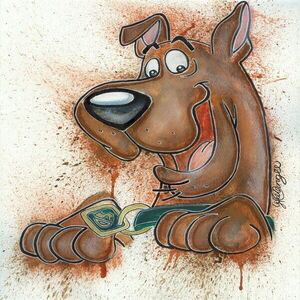
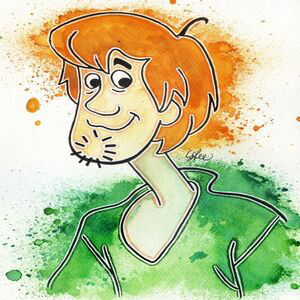
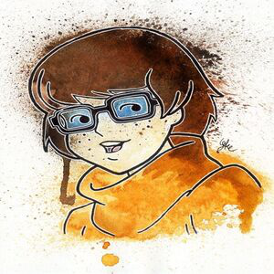
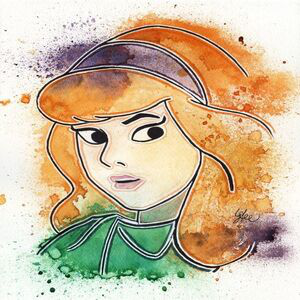
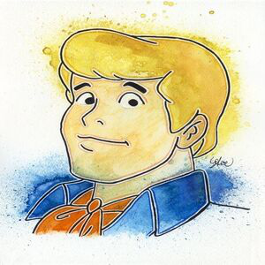

-
Scooby - Doo
Descrição.
Scoobert "Scooby" é um personagem criado pela franquia popular Hanna-Barbera. Scooby-Doo é o animal de estimação e melhor amigo de Salsicha Rogers e, em muitas repetições, é considerado como o único cão dinamarquês capaz de falar em inglês (mal falado, mas fala), ao contrário dos outros cães em sua realidade.
-
Salshicha
Descrição.
Norville "Salsicha" Rogers é um personagem fictício e protagonista das séries televisivas animadas Scooby-Doo, sobre as aventuras de quatro adolescentes que resolvem mistériios e o dinamarques de estimação de Salsciha, Scooby-Doo. Salsicha é um preguiçoso covarde mais interessado em comida do que em resolver mistérios.
-
Velma
Descrição.
Velma Dace Dinkley, mais conhecida somente como Velma, é a membro gênio de óculos da Mistério S.A., muitas vezes sendo a única a decifrar as pistas e resolver os mistérios. ela tem 15 anos.Velma é a gênia da turma, e sabe muito sobre resolver mistérios.
-
Dafine
Descrição.
Dafine Ann Blake, mais conhecida como Daphne ou Daph, é a membro amante da moda da Mistério S.A.. Daphne, descrita como vindo de uma família rica, é conhecida por seus cabelos vermelhos, seu senso de moda e sua tendência a entrar em perigo, ganhando a partir daí o apelido de "arruma encrenca". ela tem 15 anos.
-
Frede
Descrição.
Frederick Hermann Jones, mas conhecido como Fred ou Fred Jones, é o líder auto-nomeado da Mistério S.A., e (geralmente) o motorista do furgão, a Máquina Mistério (o que é estranho, já que Daphne é a dona do furgão). Fred é um jovem loiro, usuário de lenços, escultural e corajoso, tudo o que outro membro masculino do grupo, Salsicha, não é. Em spin-offs posteriores, Fred também é mostrado tendo um grande interesse por diversos tipos de esportes.